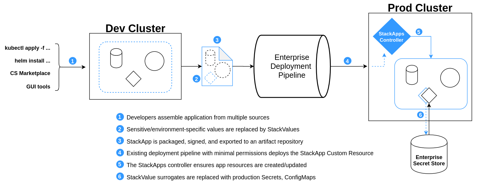

StackApps Guide
A StackApp is a resource in the Critical Stack cluster which repesents
a kubernetes application at a particular version.
The StackApp contains:
- Metadata about the application
- A reference to the manifests used to deploy all associated resources
- Signature details for the manifests
The Critical Stack cluster contains infrastructure that is aware of StackApps.
When the StackApp resource is created or modified, the underlying
application resources are updated accordingly (assuming that the cluster's
configured deployment guarantees are met which may include signing,
compatibility checks, etc).
A StackApp may be created from raw kubernetes manifests that already exist
(or that are generated from existing source material), or it may be created by
encoding selected objects running within a kubernetes cluster namespace (see
packaging). The former method (existing
manifests) is intended to serve as a bridge for developers with existing
kubernetes applications, or those who would like to create their applications
using third-party tools. The latter (running resources) is tailored toward
developers creating their applications within the Critical Stack "ecosystem"
to begin with - e.g. with the aid of CS UI and accompanying tools. The
Critical Stack API and UI would provide functionality for selecting running resources
for packaging and export into a StackApp.
Once a StackApp has been deployed (or created from components running in the
cluster), the CS UI can provide aggregated status information (health checks,
metrics data, etc) for StackApps in each namespace. Because this system is
fully integrated with the kubernetes API, this information is easily available
to other tools such as kubectl without the need for the CS UI to act as an
intermediary.
Resources that belong to a StackApp are protected (using kubernetes RBAC
permissions) by default. Similarly, all manifests currently or previously
referenced by a StackApp are immutable.

Glossary
See below for brief descriptions of key terms. Definitions are further expanded by the behavior outlined below.
- Application: for the purposes of this design, an application refers to a "business application", i.e. the primary workload of a Critical Stack cluster. It may or may not be completely self-contained, and it is likely comprised of several logical components.
- StackApp: a "Critical Stack Application" (StackApp) encapsulates an application logically. It is responsible for grouping together kubernetes resources and managing their lifecycle - creation, upgrade, rollback, deletion.
- StackValue: the representation of a secret or an environment specific configuration item within the StackApp
- Manifests: actual kubernetes-native encoding of application resources. In most cases the manifests would be generated from running resources in a cluster environment, though the initial manifests may come from an existing build artifact.
- Signer: a signer is an identity that attests to the validity of manifests. The core purpose of signing is to designate readiness for deployment, though a developer or cluster administrator may wish to further differentiate intents; manifests may be signed multiple times and each may indicate something different (i.e. signatures by a developer, a QA tester, a security review, and so on).
StackApps Custom Resources
Resources in the StackApps family are built into the API Group features.criticalstack.com.
- StackAppsConfig Cluster Scoped: The StackAppsConfig should be accessible only by a cluster administrator to maintain separation of dutes and ensure the basic configuration goes through an additional verification layer. The StackAppsConfig containts information used buy all of the controllers in the StackApps family.
- StackApp Cluster Scoped: The stackApp is the owner of all things StackApps related. It contains information necessary build the application as well as related metadata necessary for verification before installation. Any interaction with an application with the exception of administrator configuration should happen at this level
- StackRelease Namespaced: The StackRelease contains information pertaining to the current state of the application deployment, changes here precipitate any routing change or change to an underlying application. Only the StackApp controller should be allowed to create or modify a StackRelease; however StackReleases contain valuable status and troubleshooting information and should be use accordingly.
- AppRevision Namespaced: The AppRevision contains the base information needed to install and manage the application. Much like the StackRelease it should only be created or updated but one of the StackApps controllers, Although it does contain valuable status information that should be used for monitoring and troubleshooting.
- VerificationKey Cluster Scoped?: The VerificationKey is simply a crd designed to allow Rbac management of the public side of the RSA signing key